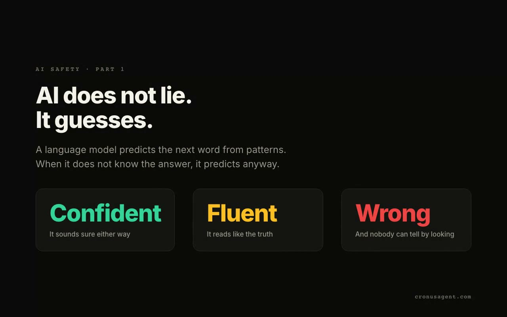
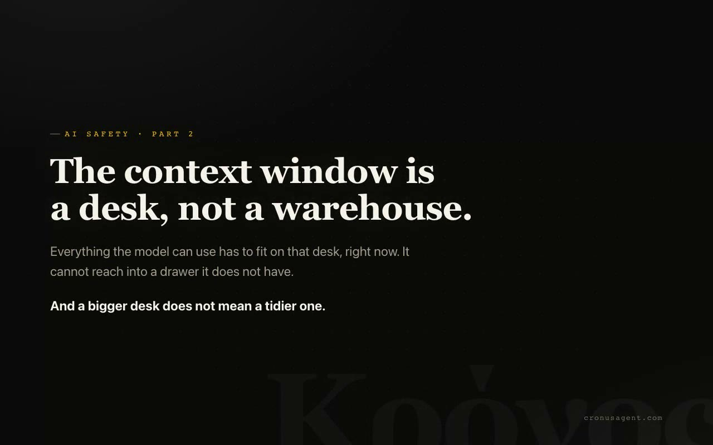
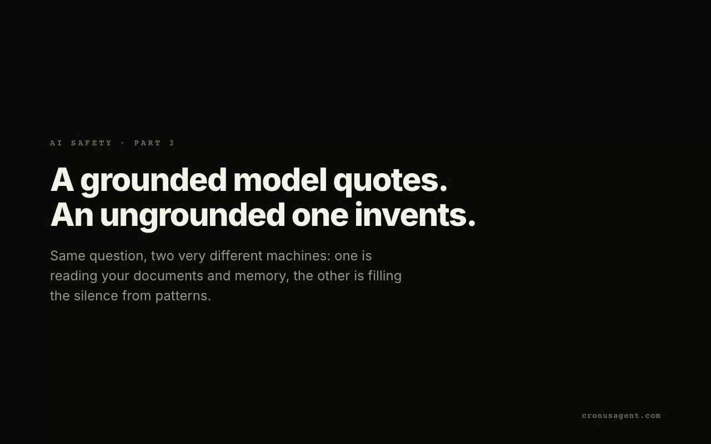
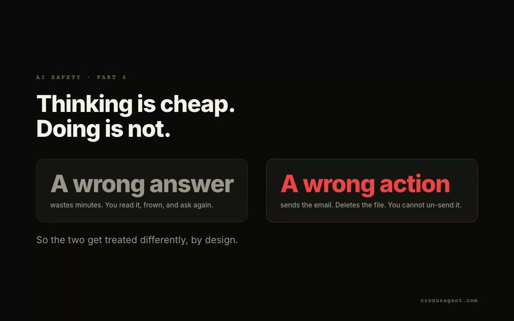
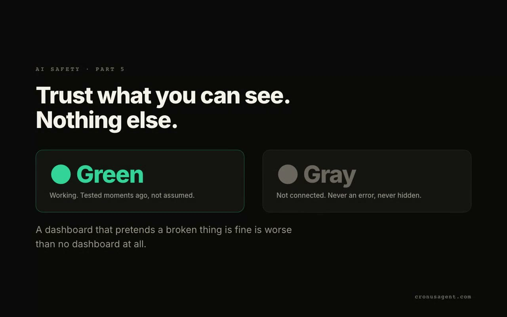
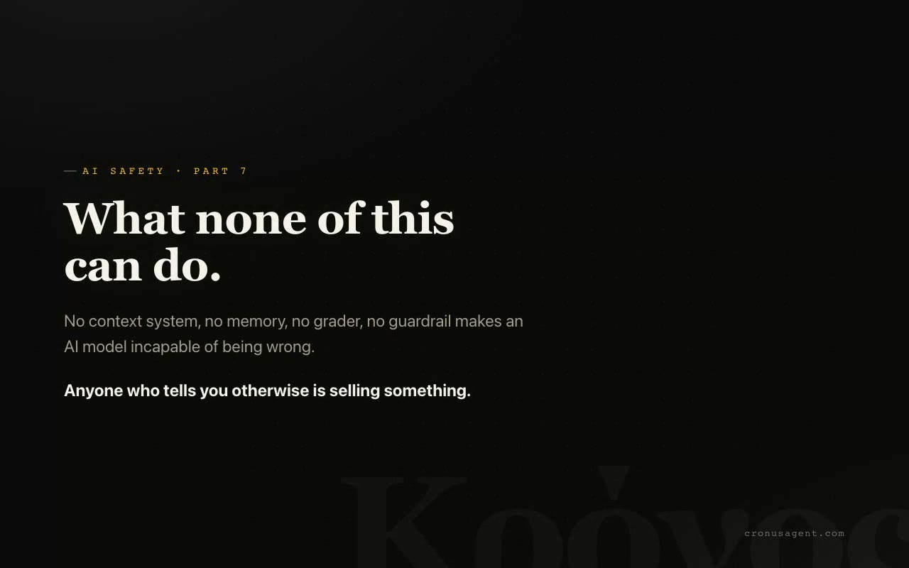

AI safety, in plain words
AI models make things up. Not because they are broken, but because of how they work. This page explains why that happens, why context management and memory are the real defense, and every other way Cronus is built to keep you safer.
2 minutes 29 seconds · narrated · sound on
The series: seven short explainers
Seven animated videos, each on its own page with the plain-words version and sources underneath. Watch them in order or jump to what you need.

Why AI makes things up
Prediction is not lookup, and guessing gets rewarded.

Context
A desk, not a warehouse. Context rot and the lost middle.

Grounding
What memory measurably does to hallucinations.

Actions
Guardrails, spend caps, and the approvals inbox.

Watching
Honest status, the activity log, the read-only audit.
Keys and data
A write-only vault and models that keep words home.

What none of this can do
The honest ending: the last check is yours.
Why AI makes things up
A model does not look facts up. It predicts the next word based on patterns it learned. When it knows the answer, prediction and truth line up. When it does not know, it still predicts, and the result is a confident, fluent, wrong answer. That is a hallucination.
Here is the part most people miss: hallucination is mostly an information problem, not an intelligence problem. Ask the smartest model in the world about your client with no information about your client, and it has nothing to predict from except vibes. Give a modest model the actual email thread, and it quotes reality. The single biggest thing you control is what the model gets to see.
A model can only be as truthful as the context you hand it. Manage the context and you manage the hallucinations. That is why Cronus treats context and memory as the product, not a feature.
Watch and read part 1: Why AI makes things up →
Context: what the model sees right now
The context window (explained in AI words, translated) is the model's working desk. Everything it can use has to be on that desk. Three things go wrong with it:
- Missing context. The fact it needs is not there, so it guesses. This is the classic hallucination.
- Stale context. A long conversation drifts. Old instructions and dead ends pile up, and the model starts blending them into its answers.
- Overstuffed context. Bury one important fact under fifty unimportant ones and the model can lose track of it. More is not automatically better.
How Cronus manages it:
- Orchestra makes context visible. Most tools hide what the model sees. The Orchestra board lays your conversations out side by side and lets you weave context between them deliberately. You choose what crosses over, so one job's leftovers do not quietly poison another job's answer.
- Fresh rooms per agent. Each agent window is its own conversation with its own context. Hermes' work does not leak into Claude's reasoning unless you send it there.
- Cronus asks instead of guessing. The router has a clarify move: when your request is genuinely ambiguous, it asks one question instead of picking a reading and running with it. An honest "which one did you mean?" beats a confident wrong guess every time.
Watch and read part 2: Context →
Memory: what the model can look up
Context solves right now. Memory solves across time. Without memory, every session starts from zero, and a model asked about last month's decision has exactly two options: admit it does not know, or make something up. Models are trained to be helpful, so they lean toward the second one. A huge share of real-world hallucinations are just this: the model inventing your own history because nobody stored it.
Cronus agents share one memory system, Hindsight, and it changes the math:
- Answers get grounded in stored facts. When you ask about past work, the agent recalls what was actually recorded instead of predicting what plausibly happened. Recalling "the meeting moved to Friday" is a lookup. Inventing it is a guess. Memory turns guesses back into lookups.
- Memory is inspectable and correctable. It lives on your disk, and you can read it. If something wrong got remembered, you can find it and delete it. A wrong memory you can see and fix is a much smaller problem than a wrong guess generated fresh every time.
- Shared memory keeps agents consistent. When every agent draws from the same record, you stop getting three different versions of the truth from three different tools.
Honest limits: memory prevents the "inventing your history" class of hallucination. It does not make a model incapable of being wrong about the outside world, and a memory system can store a mistake if a mistake gets written down. That is why memory being visible on your disk matters as much as memory existing.
Watch and read part 3: Grounding →
Better prompts in, better answers out
A vague prompt is an invitation to guess. "Make this better" forces the model to invent what better means. The composer's Prompt Rater grades your draft A to F against a strict rubric and tells you what is missing: the goal, the constraints, the definition of done. Fix it for me writes an A-standard rewrite, and you choose to use it or keep yours. It never replaces your words on its own.
Delegations get the same treatment. When Cronus hands a job to an agent it states a checkable definition of done, so "done" means something you can verify, not something the agent felt like calling finished.
Actions: the human stays in the loop
A wrong answer in chat wastes minutes. A wrong action, an email sent, a file deleted, wastes a lot more. So Cronus separates thinking from doing:
- Approvals inbox. Risky actions stop and wait for you. You see what an agent wants to do before it does it, and you decide.
- Guardrails per agent. The Safety page sets how much each agent can do on its own before it must stop and ask. Under the hood this drives each agent's real permission system, so the limit actually holds everywhere, not just inside Cronus.
- No self-updates, no phoning home. Cronus never changes itself behind your back. New versions are installers you choose to run.
Watch and read part 4: Actions →
Watching: honest status, real audits
- Tool Health tells the truth. Green means working and tested moments ago. Gray means not connected. It never pretends a broken thing is fine, because you cannot trust answers from a stack you cannot see.
- Activity shows what actually ran. Every job, every route, every result, in one log you can read.
- Security audit reads the real configs. A read-only scanner goes over each agent's actual configuration and flags risky settings, like auto-approve flags you may have forgotten about, with a severity and a suggested fix.
Watch and read part 5: Watching →
Your keys and your data
- Credentials live in a vault, not in prompts. Secrets are stored encrypted on your disk. By design there is no endpoint that reads a secret back out, so a key can never wander into a chat, a log, or a model's context.
- Local models keep data home. Route work to a model on your own machine and the content never leaves it. For sensitive material, that is the strongest privacy guarantee there is.
- Everything important is on your disk. Memory, transcripts, settings. Yours to read, back up, or delete. The ownership page covers why that matters.
Watch and read part 6: Keys and data →
What none of this can do
No system makes AI incapable of being wrong. Context management shrinks the guessing, memory grounds the history, the rater sharpens the inputs, approvals catch the actions, and the audits keep the setup honest. What remains is on you: check work that matters before you rely on it. Cronus is built to make checking easy, not to make it unnecessary.
Related reading: Security, in plain words for the practical risks of running agents, and the disclaimer for the formal version.
Watch and read part 7: What none of this can do →
Sources for the numbers in these videos
- Kalai, Nachum, Vempala, Zhang, Why Language Models Hallucinate, OpenAI, 2025. Why evaluations reward guessing over honesty.
- Vectara Hallucination Leaderboard, 2025-2026. Hallucination rates on grounded summarization and harder judge benchmarks.
- Hong, Troynikov, Huber, Context Rot, Chroma Research, 2025. 18 frontier models degrade as input length grows.
- Liu et al., Lost in the Middle, 2023. Models recall the start and end of long context best.
- Dahl et al., Large Legal Fictions, 2024, and Stanford RegLab, Hallucination-Free?, 2024. Hallucination rates with and without document grounding.
If any of these numbers stops holding up, we will change the videos. That is the deal.